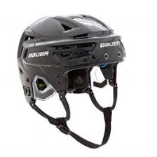

Back to Home
Back to Timeline
For a large portion of the NHL and hockey, helmets were not used. Even though in 1905, the first helmet was made out of leather, it wasn’t until 1962 that the first helmet was used in a professional hockey game. Between 1905 and 1963, there were only about 4 different helmet models.
In 1963, the first helmet to cover the top of the head was made by Jofa, a Swedish company. This helmet was made popular by Wayne Gretsky in the 80s and 90s but offered very minimal protection.
The most popular helmet during the 80s and 90s was the CCM HT2 helmet. This helmet resembles helmets today, but with less protection and padding. The HT2 had hard foam on the inside covered by hard plastic and was adjustable through screws on the side. It wasn’t until 1979 that all new players had to wear a helmet and by this time 70% of all NHLers were wearing helmets.
Thousands of hours go into testing each helmet. The major companies, just like skates, and sticks will have multiple models to fit different shapes. New helmets come out every year and at different price points. Bauer’s newest helmet, the Re-act 150, is the helmet that claims to fit almost everyone’s head because it is approximately 2.5 more adjustable than any other helmet.
